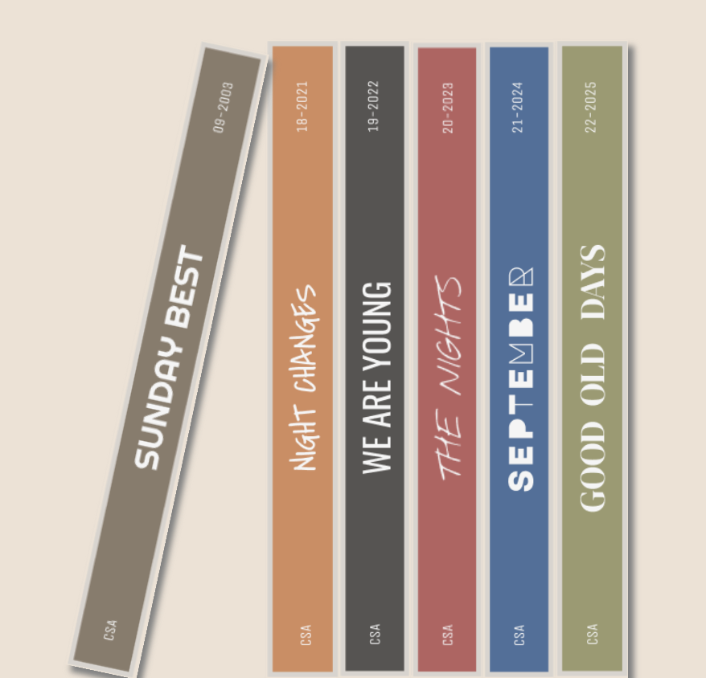

I created this digital yearbook to highlight some fun things during my time at Berkeley. Although my phone doesn't have any storage, I love taking pictures. Enjoy!
I enjoy listening to music and creating playlists. Some of my favorite artists include: 5 seconds of summer, blackpink, clairo, mina okabe, and more! Although I enjoy new music, I love old music (specifically early 2000s and early 2010s). But I listen to almost anything, so feel free to send any song recommendations.